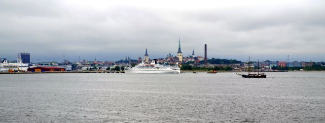

Estland is een klein land in Noord-Europa, gelegen aan de Oostzee en overzee grenzend aan Finland en Zweden,
land grenzend aan Letland en Rusland.
Met een bevolking van ongeveer 1,3 miljoen mensen staat Estland bekend om zijn indrukwekkende mix van middeleeuwse
geschiedenis en moderne technologie.
De hoofdstad Tallinn heeft een prachtig bewaard gebleven middeleeuws stadscentrum, dat op de UNESCO-werelderfgoedlijst staat.
Lees meer erover op GESCHIEDENIS
Estland is een voorloper op digitaal gebied en biedt digitale overheidsdiensten en e-residency, wat het een innovatief land maakt in de technologische wereld. Meer infos daarover in de pagina CULTUUR
Daarnaast heeft het land een adembenemende natuur, veele dieren, met uitgestrekte bossen,
meren en een kustlijn met 2355 eilanden, die je ontdekken kan op WAT ZEKER TE DOEN
Estland combineert moeiteloos traditie, natuur en vooruitstrevende innovatie. Wanneer je graag traditie met je smaakpapillen proeven wil, is de recept op CUISINE zeker de moeite waard
Neem gerust een kijkje op de webpagina om jezelf een beeld te maken over mijn Estland :)
Misschien raakt u meer geïnteresseerd om het land met eigen ogen te gaan zien, kijk dan eens op de boekingpagina VERBLIJF
